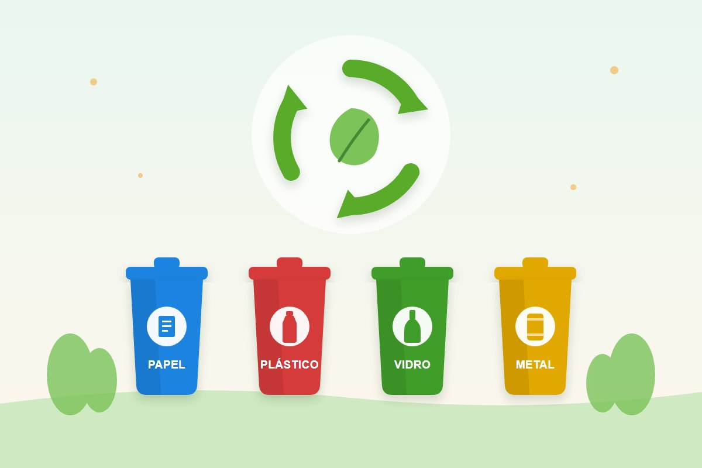

Comportamento
Como as pessoas te enxergam: hábitos que constroem ou prejudicam sua imagem
A forma como as pessoas nos enxerga raramente depende apenas do que dizemos. Na maioria das vezes, ela é construída a partir de pequenos comportamentos repetidos no dia a dia. Pontualidade, respeito, postura, disciplina e a maneira como lidamos com os outros dizem muito mais sobre quem somos do que grandes discursos.
A imagem que projetamos é, na prática, um reflexo direto dos nossos hábitos.
A primeira impressão e o poder dos pequenos gestos
Antes mesmo de alguém conhecer profundamente nossa personalidade, alguns sinais já começam a moldar a percepção sobre nós. Coisas simples como olhar nos olhos durante uma conversa, ouvir com atenção, demonstrar interesse e tratar as pessoas com respeito já comunicam muito sobre nosso caráter.
Empatia também faz parte dessa primeira impressão. A capacidade de se colocar no lugar do outro, compreender sentimentos e reagir com sensibilidade cria conexões mais fortes e relações mais saudáveis.
Por outro lado, atrasos constantes, falta de organização ou desatenção podem gerar a impressão de desleixo ou falta de comprometimento.
Isso mostra que a forma como somos vistos é construída aos poucos, por meio de atitudes cotidianas.
Bons hábitos que fortalecem sua imagem
Alguns hábitos têm impacto direto na maneira como as pessoas nos percebem. Entre os mais importantes estão:
1. Pontualidade - ser pontual demonstra respeito pelo tempo dos outros e transmite responsabilidade.
2. Escuta ativa - Ouvir com atenção, sem interromper, mostra consideração pelas ideias e sentimentos de quem está falando.
3. Empatia - Saber se colocar no lugar do outro ajuda a compreender diferentes perspectivas e fortalece relações.
4. Respeito - Tratar todos com educação, independentemente da posição ou situação, demonstra maturidade e caráter.
5. Consistência - Cumprir o que promete cria credibilidade. Pessoas confiáveis são sempre bem-vistas.
6. Organização - Ser organizado com tarefas e compromissos transmite profissionalismo e controle.
Hábitos que podem prejudicar sua imagem
Alguns comportamentos passam despercebidos por quem os pratica, mas são facilmente notados por quem convive. Um exemplo comum é o hábito de reclamar constantemente.
Reclamar ocasionalmente é normal, afinal todos enfrentamos dificuldades. O problema surge quando a reclamação se torna constante e passa a dominar conversas e atitudes. Pessoas que reclamam o tempo todo podem ser percebidas como negativas, difíceis de lidar ou pouco proativas.
Isso não significa ignorar problemas, mas sim buscar uma postura mais voltada para soluções do que para a repetição das dificuldades.
Outros hábitos que também podem prejudicar a forma como somos vistos incluem:
- Interromper os outros com frequência
- Falta de empatia com as dificuldades alheias
- Desrespeitar opiniões diferentes
- Não assumir responsabilidades pelos próprios erros
- Falta de comprometimento com tarefas e prazos
Hábitos que muitas pessoas precisam desenvolver
Nem sempre percebemos alguns comportamentos que podem prejudicar nossa imagem. Por isso, desenvolver novos hábitos pode ser um passo importante para melhorar relações pessoais e profissionais.
1. Autocontrole emocional - Aprender a lidar com frustrações e críticas sem reagir impulsivamente.
2. Comunicação clara - Expressar ideias de forma simples e objetiva evita conflitos e mal-entendidos.
3. Disciplina diária - Pequenas rotinas bem-feitas constroem resultados grandes ao longo do tempo.
4. Mentalidade de aprendizado - Estar aberto a feedbacks e disposto a evoluir faz com que as pessoas vejam você como alguém em constante crescimento.
5. Transformar reclamação em ação - Em vez de apenas apontar problemas, buscar soluções e contribuir para melhorias demonstra maturidade e liderança.
Otimismo e otimista
Ser otimista é um hábito que influencia diretamente a forma como somos vistos e como enfrentamos os desafios do dia a dia.
Pessoas otimistas tendem a transmitir energia positiva, confiança e motivação, o que naturalmente atrai relações mais saudáveis e ambientes mais colaborativos.
O otimismo não significa ignorar problemas, mas encará-los com uma postura construtiva e focada em soluções. Esse tipo de atitude fortalece a imagem pessoal e profissional, pois demonstra resiliência, equilíbrio emocional e capacidade de inspirar outras pessoas. Além disso, manter uma visão mais positiva da vida contribui para o bem-estar, reduz o estresse e aumenta a disposição para aprender, evoluir e superar dificuldades.
A construção da reputação
Reputação não é construída em um único momento. Ela nasce da repetição de atitudes ao longo do tempo. Cada escolha, cada reação e cada hábito contribuem para a forma como os outros nos definem.
Quando cultivamos empatia, respeito e responsabilidade, fortalecemos nossa imagem e também contribuímos para relações mais saudáveis e ambientes mais positivos.
No final, a pergunta mais importante não é apenas “como as pessoas me veem?”, mas sim “que tipo de pessoa minhas atitudes mostram que eu sou?”.
Referências
- Filmes
- À Procura da Felicidade – mostra perseverança, resiliência e esperança diante das dificuldades.
- Divertida Mente (Inside Out) (Disney+) – aborda emoções, empatia e autoconhecimento.
- O Homem que Mudou o Jogo (Moneyball) – fala sobre visão, persistência e mudança de mentalidade.
- Extraordinário (Wonder) – destaca empatia, respeito e como nossas atitudes impactam os outros.
- Séries
- Ted Lasso (Apple TV) – conhecida pela mensagem de otimismo, empatia e liderança positiva.
- The Good Place – discute ética, comportamento humano e como podemos melhorar como pessoas.
- Anne with an E (Netflix) – mostra sensibilidade, empatia e uma visão positiva da vida mesmo em momentos difíceis.
- Livros
- O Poder do Hábito – Charles Duhigg
- Hábitos Atômicos – James Clear
- Mindset – Carol S. Dweck
- O Monge e o Executivo – James C. Hunter
- Extraordinário – R.J. Palacio
Leia também
Antes e depois da pandemia: o que mudou nas pessoas?
Hábitos, rotinas e prioridades mudaram. O desafio agora é encontrar equilíbrio.
Ler matériaQual é a causa de alguém humilhar outra pessoa?
O que está por trás de quem humilha — e como se proteger sem se diminuir.
Ler matéria
Reciclagem e descarte correto do lixo: guia prático
Como separar o lixo em casa, o que pode ser reciclado, as cores da coleta seletiva e onde descartar pilhas, óleo e eletrônicos.
Ler matériaGostou desta matéria? Veja outras no blog, conheça nossas referências ou fale com a gente.